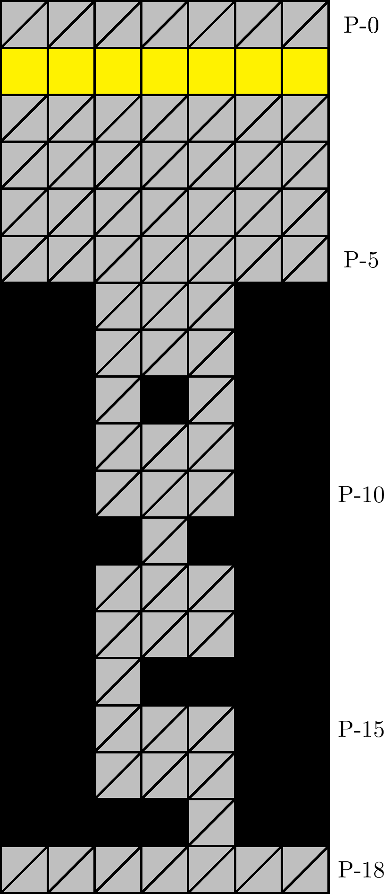

一般指針
エリア・三列

指針
三列は自然に潜行します．
解説
三列とは，図 3.2.3.1 のエリアを指します． 100 m, 400 m, 900 m型の 57 行目に確率で出現します． P-6 行目の壁の配列によって同定されます．
エリアの始点深度（黄色の行）はパターン WL, WC, WR のいずれかです（図 3.2.3.2–3.2.3.4）．どのパターンであっても，直下傾向の経路は実質的に一意的です．
P-6 行目から P-17 行目までの壁でないブロックはすべて石です．一方で， P-1 行目から P-5 行目までの区間では，壁や塊が出現することがあります．
レーザーステージでは，位置取り可能性に注意しながら潜行します．「定跡・レーザー回避」も参照してください．